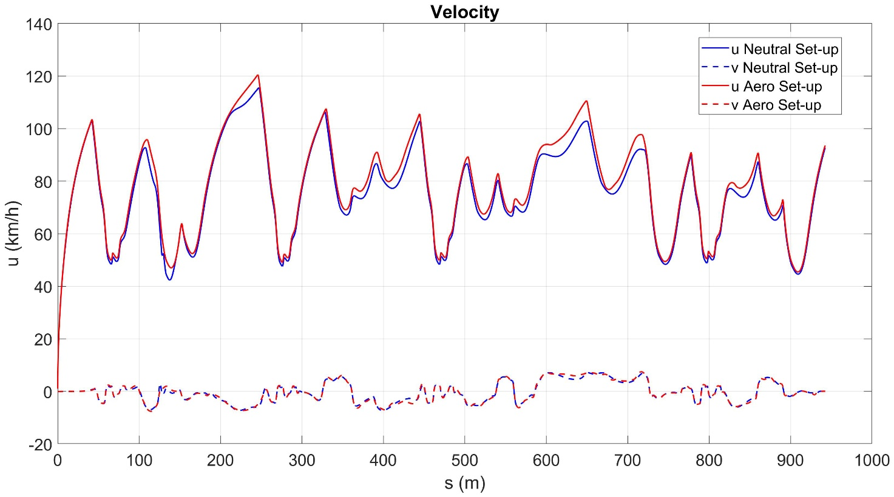
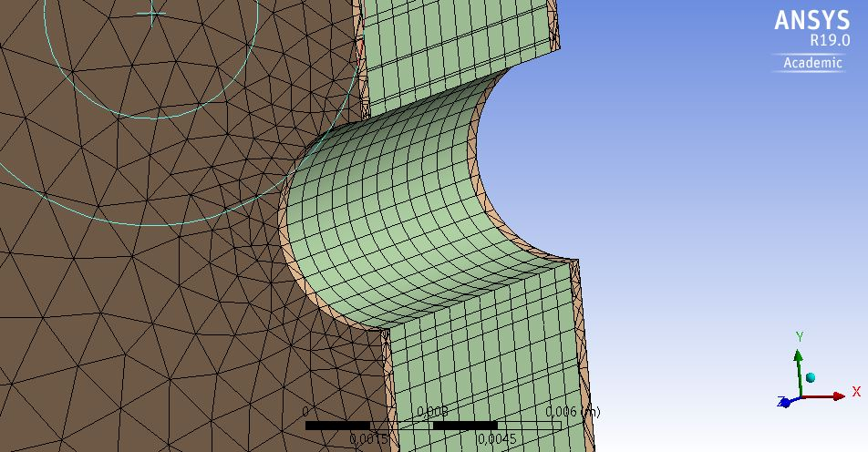

Aerodynamics of Chimera Evoluzione¶

Design¶
The Concept¶
This is the first time in our history that we perform a complete aerodynamics study to improve our car’s performances. Because of the low speed and high accelerations of our car, we decided to focus our aerodynamics on creating downforce. Having no experience in aerodynamics devices manufacturing, our goal was to design and produce an efficient wing out of carbon fiber composites. Doing so we can directly experiment the design and manufacturing techniques related to the carbon-fiber composites in aero-devices. From the literature we got some common lift and drag values, and after some simulations we found out that adding downforce to the rear axle compensates to the natural over-steering behavior of our car. We adopted an unsprung solution for the wing to bring downforce directly to the upright, without passing through the suspension mechanism, this allows us to keep the car at the lowest possible setup, without worrying about the additional load coming from the wing. We decided to experiment this kind of solution also to make easier a future development of an undertray, thanks to the more predictable height and pitch of the vehicle.
The [s1223] Airfoil¶
The airfoil has been chosen from the airfoiltools.com online database, it is the [s1223], which is a High-lift cambered airfoil, and performs well at low speed in terms of Cl/Cd. The airfoil performances have been validated in the Ansys Fluent 2D environment.
Selig S1223 high lift low Reynolds number airfoil Max thickness 12.1% at 19.8% chord. Max camber 8.1% at 49% chord
Reynolds number has been estimated to be enclosed between 500.000 and 1.000.000, with the speed ranging from 40km/h to 90km/h, for a 600mm wing cord.
From the airfoiltools.com, the [s1223] online datasheet:
Violet -> Re = 500.000 Yellow -> Re = 1.000.000

Due to the experimental purposes of this wing, we made it adjustable on three different angles of attack. It is not an active wing, the setup must be changed manually before the run, by operating on six screws.
The three angles have been chosen while keeping high Cl/Cd.
α1 = 12°, α2 = 7°, α3 = 2°
In our simulations we used the most critical configuration, at α = 12°, at the most common cornering speed 17m/s (≈60km/h).
The simulated coefficients are slightly worse than the ones that we expected from the datasheet. In the stream-line plot we can notice a partial flow detachment at the very tip of the wing, which may be the cause of our Cl drop and Cd rise. It’s unclear if the flow detachment is supposed to exist, or if it is the result of an approximation. Anyway, we headed up with the design of the wing.
Going 3D¶

After the 2D validation, the shape of thw wing has been designed to concentrate the highest angle of attack on the sides (where the airflow is undisturbed by the main-hoop’s turbulence) reducing by 3° in the middle. At the same time the wing chord increases toward the middle of the wing, in order to increase the flexural resistance, and keep high the lift on the full span.
After the 3D shaping of the wing, 3D CFD simulations have been done in order to validate the final geometry. For calculus simplicity, the wing is suspended in air neglecting of the turbulence of the car in front of it. The two rod-joints on the top have been suppressed too.

This performance drop might depend on two factors: the first is that the coarseness of the mesh does not allow to properly model the boundary layer, the second is related to the wing geometry. If we look at the stream-line graphics we clearly see two counter rotating vortices.
These two vortices dissipate energy (increasing Cd), and simultaneously decrease the effective wing span (dropping Cl).
Dynamics¶
Once the wing aerodynamics properties were validated, we used the calculated coefficients in our optimal control simulations. We performed the test on a generic autocross circuit with and without the presence of the wing. We obtained a nice improvement on the fast corners, allowing us to go even faster and having higher lateral accelerations.
We have an improvement on the lap time of -1,4457s, which corresponds to a 3,08% faster lap in optimal conditions.
We can also confirm that the wing compensates to the natural oversteering behavior of our car, which become almost neutral in the range between 65 and 80km/h. Over 90km/h the behavior is definitely under-steering. Our plan for the future is to add a front wing to compensate this problem.
Structural efficiency¶
Once the dynamics were validated, it was time to check the structural efficiency of the whole aero device.
The Wing shell¶
The most critical part of the wing structure is the wing shell, it must guarantee a maximum deflection lower than 10mm, with 200N applied vertically. Since we don’t have precise data about this carbon fiber layout, in our simulation we used a single 0,5mm thick carbon-epoxy layer. After the simulation, to ensure the rigidity, we over-dimensioned the layout as follows (at the price of the weight):
The wing is then glued to two lateral Al 6082 blades, which are used to screw the wing to the endplates.
The loading configuration has been exported from the 100km/h CFD simulation as a pressure distribution.
Just to have an idea of the loads, we calculated them by fixing the wing by the six mounting holes, and calculating the reaction forces.
The drag contributes (X Axis) is negligible respect to the lift (Y Axis); because of that for the structural analysis we modeled the wing as simply fixed by the 6 mounting holes, neglecting of the two streamlined anchors on the top. The two Al 6082 side-plates are kept in place to evenly distribute the pressure from the carbon to the mounting holes.
The maximum equivalent stress is reached in proximity of the mounting holes, on the aluminum side-plates; 89MPa is ok for the Al 6082. On the carbon shell we see that 20MPa peaks are reached, which is ok.
The maximum displacement is about 7mm, with about 400N of load. Which is already ok for the FSG2018 rules. By over dimensioning the carbon fiber layout we are sure that the rigidity requirements are met.
Upright attachment¶
The upright attachment is made out of 3 Al 6082 sheets, pressed together by 5 screws around the wing supports.
Over the aerodynamics downforce, this part must withstand the inertial loads caused by the wing structure above it, and road asperity accelerations. Assuming a mass of about 2,5kg for the wing structure supported by the upright attachment, and a vertical acceleration of about 40G coming from the tire hitting a curb at 100km/h, we get about 1000N from inertia, plus half of the 400N from the aero downforce at 100km/h. Our load is then 1000+200 = 1200N, which is evenly distributed on the 3 upper screws. For model simplicity, we assumed the force coming from the road, and the part is fixed by the 3 screw holes.
The force is transmitted to the two lateral plates by two steel pins.
As expectable, the maximum stress is located in proximity of the lower attachment hole, anyway it is limited to 52MPa. This part has been designed to guarantee a high stiffness, and distribute the tension on the carbon fiber support, in order to avoid stress concentrations.
Wing Supports¶
As for the wing shell, we still made conservative assumptions for this part, and over dimensioned the carbon layout. In our simulation we still used a single carbon-epoxy layer, instead of the 6 used on the real part, and a 9mm thick foam core.
The wing’s support has been tested with a load of 1000N, assuming 800N of inertial forces while hitting a curb, plus 200N from aero downforce

Such a refined mesh was needed to properly model the contact surface between the carbon layer and the core.
The displacement is ok, simply negligible for our purposes.
Manufacturing of the wing shell¶
The mold for the wing shell has been obtained from a hydrophobic MFD (Medium density fiber) block. This choice has been governed by the extremely low cost of the material (600€/m 3 ) compared to the Ureol (8000€/m 3 ). Turned out that we got some troubles due to the moisture absorbed in the wood, that developed some bubbles while in the autoclave. We also got some problems since the wood does not conduce heat very well, and we needed to keep the mold in the autoclave for a longer period of six hours, instead of 4 hours, to ensure a complete cure of the resin.
Future Developments¶
For our next step we plan to invest more energies into the aerodynamics studies, since we think to have a large margin to improve our car performances using aerodynamics.
We have 3 main goals:
- Development of a fully adjustable aerodynamic pack, complete of undertray, front, and rear wing.
- Overall car characterization and drag reduction.
- Improvement of the carbon fiber manufacturing techniques.
Development of a full aerodynamic pack¶
We aim to the development of a fully adjustable aero pack. This to increase our knowledge of the overall vehicle behavior, and correction of the actual understeering at high speeds.
Our plan is to have a large use of 3D printed aerodynamics appendix instead of carbon fiber ones. Additive manufacturing allows us to have extremely complex shapes, at relatively low costs if compared to the carbon fiber laminated ones.
Car drag reduction¶
We performed a rough analysis of the car behavior in the free stream using Autodesk Flow Design ©. What emerged is that the main drag sources in our car are the front wheels, and the very high main hoop.